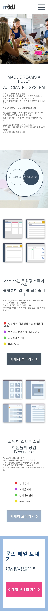
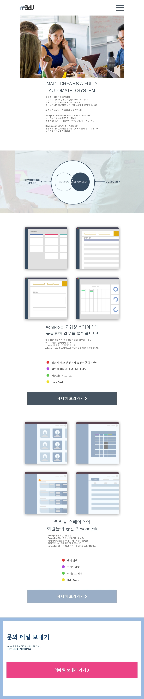

삼성꿈장학재단
사용언어: spring, java, my-batis, mysql, linux, javascript, jquery, css, html, jsp, bootstrap
삼성꿈장학재단은 상성 그룹에서 만든 비영리 재단으로 가정환경이 어려운 학생들과 외국 유학생들에게 장학금, 의료, 교육을 지원하여 도움을 주는 단체입니다.
이전 회사에서 같이 근무했던 CTO의 회사와 계약 후 프리랜서로 프로젝트에 참여하였고 3개월간의 기간동안 약 300페이지 분량의 작업을 하였습니다.
처음 프론트엔드쪽 작업을 하기로 하고 계약 후 프로젝트에 투입되어 약 2개월간 할당된 페이지의 프론트 작업을 끝냈고 기간중에 백엔드 작업을 맡고있던 CTO의 요청으로
백엔드 작업도 진행하게 되었습니다.
의 관리시스템과 꿈장학이라는 장학금 지급을 위한 신청과 평가
css와 html jsp로 만들어진 반응형 웹사이트입니다.

모바일 버전입니다.

테블릿 버전입니다.

피씨버전입니다.